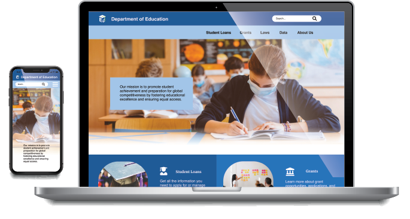

Redesign U.S Department of Education Website

Project Overview
My goal is to employ various design techniques to conduct user research and analyze UI navigation, pinpointing usability issues within the Ed.gov site. Based on the results of this research and analysis, I will redesign the site's navigation to enhance user experience. Furthermore, I will ensure the website is responsive to cater to a broader audience.
My Role
- UX Design
- User Research
- UI Design
Tool
- Miro
- Figma
- Google Suites
Project Duration
11/2021-12/2021
6 weeks